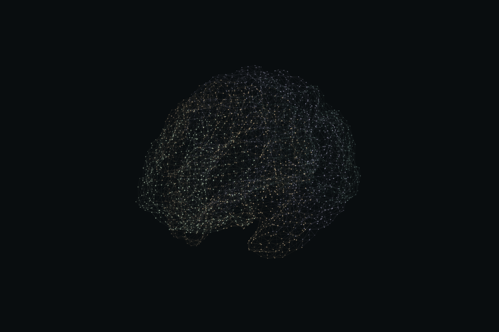
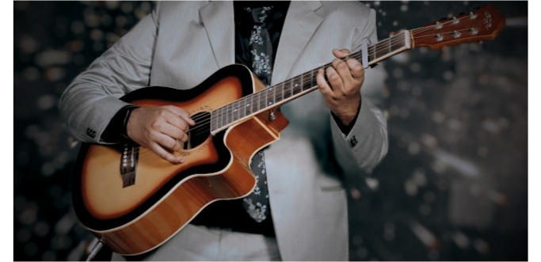

Extremely Fast and Compact Binary Graph Representations via Randomized Operator Sketching
Srajan Agarwal, Megha P, Bikas C Das, Zakaria Laskar, Saptarshi Bej
arXiv:2609.32641 · 2026
DEEP LEARNING & COMPUTATIONAL NEUROSCIENCE
I’m a Data Science student at IISER Thiruvananthapuram working at the intersection of deep learning and computational neuroscience.
My research focuses on graph representation learning applied to brain networks. I explore how structural and functional connectivity govern neural information passing to support cognitive function, aiming to discover robust computational biomarkers for neurological diseases.
RESEARCH
Graph learning, neural information passing, and computational neuroscience.
PUBLICATIONS
Srajan Agarwal, Megha P, Bikas C Das, Zakaria Laskar, Saptarshi Bej
arXiv:2609.32641 · 2026Megha P, Harshit Kumar, Srajan Agarwal, Anirban Banerjee, Olaf Wolkenhauer, Saptarshi Bej
arXiv:2610.03211 · 2026EXPERIENCE
PyTorch · PyG · MNE-Python
NumPy · SciPy · NetworkX
Neuropixels / IBL · Git · Linux
IDEA Lab · IISER Thiruvananthapuram
Compact graph representations & scalable graph condensation.Cajal Institute · CSIC, Madrid
Cortical graph modelling with source-localised EEG.Medical Imaging Lab · IISER Thiruvananthapuram
Quantitative susceptibility mapping & tomographic reconstruction.India AI Project
Collaborative NLP pipelines for regional news analysis.EDUCATION
Thiruvananthapuram, Kerala
Expected graduation: August 2027 · CGPA: 8.11 / 10 · Major Subject GPA: 8.66 / 10
BEYOND RESEARCH
Acoustic guitar and hand-drawn artwork away from the screen.

Fingerstyle acoustic guitar away from the screen.
Selected studies in graphite and colored pencil.
CONTACT
For research conversations, collaborations, or academic inquiries.